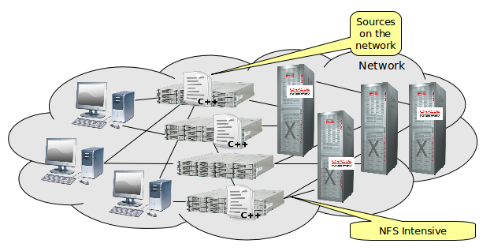
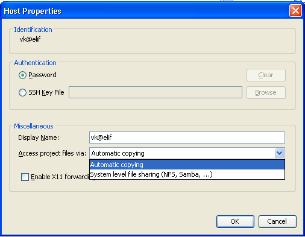

Apache NetBeans
Apache NetBeansLatest release
Modos de Desenvolvimento Remoto de C/C++ no IDE
| This tutorial needs a review. You can open a JIRA issue, or edit it in GitHub following these contribution guidelines. |
- O Que É Desenvolvimento Remoto
- Quando Usar o Desenvolvimento Remoto
- Como Funciona o Desenvolvimento Remoto
- Benefícios do Desenvolvimento Remoto
- Decidindo Qual Modo de Desenvolvimento Remoto Usar
- Selecionando seu Modo de Desenvolvimento Remoto
- Desenvolvimento Totalmente Remoto Usando a Barra de Ferramentas
- Caches e Segurança
- Para Obter Mais Informações
Março de 2014 [Número da revisão: V8.0-1]
Este artigo descreve os recursos de desenvolvimento remoto disponíveis no NetBeans IDE quando você tiver o módulo C/C++ instalado, e como escolher a melhor forma de usá-los no seu ambiente de desenvolvimento.
O Que É Desenvolvimento Remoto
O desenvolvimento remoto é uma funcionalidade do NetBeans IDE que permite executar o IDE em um computador executando Microsoft Windows, Mac OS X, Oracle Solaris ou Linux. Ele permite ainda compilar, executar e depurar seu programa em outro computador que execute Oracle Solaris ou Linux.
Quando Usar o Desenvolvimento Remoto
Você pode usar o desenvolvimento remoto se uma das circunstâncias abaixo for verdadeira para você:
-
Seu sistema operacional não está executando Oracle Solaris ou Linux.
-
Você está executando o IDE em um sistema Solaris que às vezes tem cargas altas.
-
Seu acesso aos sistemas que executam o Oracle Solaris ou Linux se limita ao SSH (Shell Seguro) por motivos de segurança.
-
A execução das ferramentas da interface gráfica do usuário é difícil no ambiente do Solaris.
-
O software que você está desenvolvendo deve ser compilado e executado em várias plataformas, como Solaris e Linux.
Como Funciona o Desenvolvimento Remoto
O IDE fornece funcionalidades para gerenciar hosts remotos. Você pode configurar um host remoto para usar para compilação, execução e depuração dos projetos em C, C++ e Fortran. O host remoto deve atender às seguintes condições:
-
O sistema operacional do host remoto deve ser Oracle Solaris ou Linux.
-
O host remoto deve executar o daemon do SSH,
sshd. -
Pelo menos um conjunto de ferramentas (GNU, Oracle Solaris Studio ou Sun Studio) deve estar acessível no host remoto.
-
Você deve ter uma conta de usuário no host.
Você pode gerenciar seus hosts remotos na janela Serviços do IDE.

Depois de configurar o host remoto e conectá-lo, você poderá compilar, executar e depurar projetos como faz no seu sistema local. Os comandos do IDE Remoto são executados em SSH.
Quando você usa um host de desenvolvimento remoto, os hosts locais e remotos precisam acessar os arquivos do projeto. Esse acesso pode ser realizado por meio de compartilhamento de arquivos ou cópia segura dos arquivos. Antes de o IDE usar o compartilhamento de arquivos entre os sistemas locais e remotos, o sistema de arquivos compartilhado ou a pasta deve ser configurada e ficar acessível para ambos os sistemas. Os arquivos remotos são acessados por SFTP ou outro mecanismo de compartilhamento de arquivo disponível no sistema operacional em que o host está sendo executado (por exemplo, NFS, Samba ou WebDAV).
Se o compartilhamento de arquivos não for possível, você poderá usar a Cópia Automática para copiar os arquivos no servidor usando SSH.
Benefícios do Desenvolvimento Remoto
O desenvolvimento remoto oferece os seguintes benefícios:
-
Você pode usar o mesmo ambiente de desenvolvimento para todos os projetos.
-
Os recursos para seu sistema de desktop são melhor utilizados.
-
O tráfego de rede é otimizado.
-
O tempo de resposta do IDE é melhor.
-
Você pode navegar por sistemas de arquivo remotos do IDE.
-
Você pode abrir uma janela de terminal no IDE para um host remoto.
-
Você só pode usá-lo em ambientes seguros de SSH.
image::images/modes_diagram.png[]
No modo simples, os arquivos de origem residem principalmente no host local. Quando você cria seu projeto, os arquivos de origem são entregues sob demanda para o host remoto com o uso do SFTP (Protocolo de Transferência de Arquivos do SSH).
No modo misto ou compartilhado, os arquivos de origem residem em um local compartilhado entre o host local e o remoto usando o NFS, Samba, WebDAV ou outro sistema de compartilhamento de arquivos.
No modo totalmente remoto, os arquivos de origem residem no host remoto. O IDE acessa os arquivos usando SFTP.
Decidindo Qual Modo de Desenvolvimento Remoto Usar
O melhor modo de desenvolvimento para sua situação específica depende do ambiente de desenvolvimento em que você trabalha. Cada seção a seguir descreve um exemplo de um ambiente de desenvolvimento em que um modo de desenvolvimento oferece os maiores benefícios.
Modo Simples
O modo simples pode ser o melhor modo remoto para suas necessidades se o diagrama a seguir descrever seu ambiente de desenvolvimento.

Neste ambiente, o modo simples oferece estes benefícios:
-
Você pode usar o mesmo IDE para desenvolvimento local e remoto.
-
Você pode alternar facilmente entre hosts e plataformas no IDE.
-
Você pode usar o IDE em um ambiente somente SSH.
-
Sua mobilidade aumentou.
Modo Misto (Compartilhado)
O modo misto ou compartilhado pode ser uma boa escolha se seu ambiente de desenvolvimento tiver a aparência mostrada no seguinte diagrama.

Os benefícios do uso de modo misto neste ambiente são:
-
Você pode alternar facilmente entre hosts e plataformas no IDE.
-
Não há nenhuma duplicação de arquivos (armazenamento no cache) como ocorreria na outros dois modos.
-
O throughput de rede será tão bom quanto seu mecanismo de compartilhamento de arquivo (por exemplo, NFS, Samba ou WebDAV) puder especificar.
Modo Totalmente Remoto
O modo totalmente remoto pode ser o melhor para você se o seu ambiente de desenvolvimento tiver a aparência mostrada no diagrama a seguir.

Neste ambiente, os benefícios do uso de modo totalmente remoto são:
-
A migração com o uso de encaminhamento de X-window ou VNC é praticamente inigualável.
-
O tempo de resposta do IDE aumenta.
-
Você dependerá menos dos recursos do host de desenvolvimento.
-
Uma carga menor no host de desenvolvimento reduz a carga no Oracle Solaris.
-
Você pode criar novos projetos remotos de arquivos binários remotos.
Selecionando seu Modo de Desenvolvimento Remoto
O modo de desenvolvimento remoto que você usa é determinado pela forma que você configura um host de compilação remoto, mas também pela forma como você acessa o projeto no IDE.
Para cada modo, você deve primeiro configurar um host de compilação remota, como descrito no tutorial de Desenvolvimento Remoto do C/C++ e na Ajuda do IDE.
Você pode selecionar o modo simples ou misto para o host remoto no IDE usando a caixa de diálogo Propriedades do Host para especificar como os arquivos de projeto devem ser acessados quando você usa o host.
Abra a janela Serviços, expanda o nó Hosts de Compilação do C/C++, clique com o botão direito do mouse em um host remoto e selecione Propriedades.

Modo Simples
Para o modo simples, defina Acessar arquivos do projeto pela cópia Automática.
É possível clicar com o botão direito do mouse, selecionar Definir Host da Compilação e selecionar o host remoto que você configurou para acessar os arquivos do projeto via cópia automática. Em seguida, você usará o modo de desenvolvimento remoto simples. Quando você compilar o projeto, os arquivos de projeto serão copiados automaticamente para seu diretório de usuário do NetBeans no host remoto.
Modo misto
Para o modo misto, defina o Acesso aos arquivos do projeto via Compartilhamento de arquivos no nível do sistema.
É possível clicar com o botão direito do mouse, selecionar Definir Host da Compilação e selecionar o host remoto que você configurou para acessar os arquivos do projeto via compartilhamento do arquivo no nível do sistema. Em seguida, você usará o modo de desenvolvimento remoto misto. Quando você criar o projeto, os arquivos do projeto permanecerão onde estão, pois poderão ser acessados do host local e do host de compilação remota.
Modo totalmente remoto
Para usar o modo totalmente remoto no IDE, use a barra de ferramentas Desenvolvimento Remoto descrita na seção a seguir.
Desenvolvimento Totalmente Remoto Usando a Barra de Ferramentas
No modo totalmente remoto, você pode usar o IDE em execução no host local para trabalhar em projetos localizados em um host remoto, usando a barra de ferramentas de desenvolvimento remoto.
A barra de ferramentas é mostrada na figura a seguir.

Se você não vir a barra de ferramentas no IDE, poderá exibi-la escolhendo Exibir > Barras de Ferramentas > Remota.
Você pode usar a barra de ferramentas remota para selecionar um host remoto que já tenha configurado e trabalhar com projetos e arquivos no host remoto como se eles fossem locais.
Use os ícones conforme descrito na tabela a seguir.
|
Status da conexão. Clique no ícone para conectar o servidor selecionado na lista ao lado do ícone. Se você já estiver conectado, poderá clicar nesse ícone para se desconectar do servidor. O ícone indica o status da conexão, ficando verde quando conectado e vermelho quando não conectado. |
|
Criar projeto remoto. Clique no ícone para criar um novo projeto no host conectado no momento. Por default, o projeto é criado no seu diretório |
|
Abrir projeto remoto. Clique no ícone para abrir projeto existente no host conectado no momento. Você pode navegar até o projeto no sistema de arquivos remoto. |
|
Abrir arquivo remoto. Clique no ícone para abrir um arquivo no host conectado no momento. Você pode navegar até o arquivo no sistema de arquivos remoto. |


Caches e Segurança
Para oferecer acesso rápido aos arquivos remotos, o IDE usa um cache em disco no sistema local. O cache se localiza em userdir/var/cache/remote-files, em que userdir é exclusivo para o usuário e sua localização varia de acordo com a plataforma que você está executando o IDE.
Consulte uma descrição do userdir e dos locais de cada plataforma em http://wiki.netbeans.org/FaqWhatIsUserdir.
Quando você usar um desenvolvimento remoto em modos simples e compartilhados, somente cabeçalhos do sistema serão acessados pelo cache local, de forma que não haja risco de segurança.
No modo totalmente remoto, embora os arquivos se localizem no host remoto, o projeto é analisado no computador local. Quando os arquivos de origem são acessados para análise, eles são armazenados em cache no host local em userdir/var/cache/remote-files e eventualmente todos os arquivos de origem ficam no cache.
Nos computadores remotos, isso pode ser considerado risco de segurança. Para aumentar a segurança, o diretório de cache pode ser criptografado ou excluído regularmente.
Os caches que residem no ` ~/.netbeans/remote` no host remoto são criados quando você usa o modo simples e os arquivos de origem são copiados automaticamente sob demanda do host local para o host remoto, durante a compilação do projeto. Esses arquivos estão tão seguros quanto qualquer outro do servidor, portanto eles não geram preocupação de segurança.
Para Obter Mais Informações
Consulte os seguintes locais para obter mais informações:
-
O menu Ajuda do IDE oferece acesso a muitas informações sobre o uso do IDE.
-
O tutorial de Desenvolvimento Remoto do C/C++ informa como fazer o desenvolvimento remoto simples passo a passo
-
A link:https://netbeans.org/kb/trails/cnd.html[+Trilha de Aprendizado C/C+] oferece diversos artigos e tutoriais para o desenvolvimento em C/C no IDE.